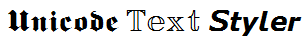

Usage: Enter text to style then press one of the buttons above. You can apply multiple styles to different parts of the text by selecting parts of the text and pressing the required buttons (if no text is selected the style is applied to the entire text). Depending on the style you choose, you may convert Latin and/or Greek uppercase or lowercase letters and/or the digits 0-9 (mouseover a button for an explanation of what characters the style will be applied to). If the text is displayed as square boxes, you may apply a specified font by entering the exact font name to use into the box above and then press "Set Font".
BabelMap Online | Unicode Slide Show | What Unicode character is this ?